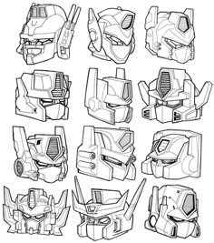
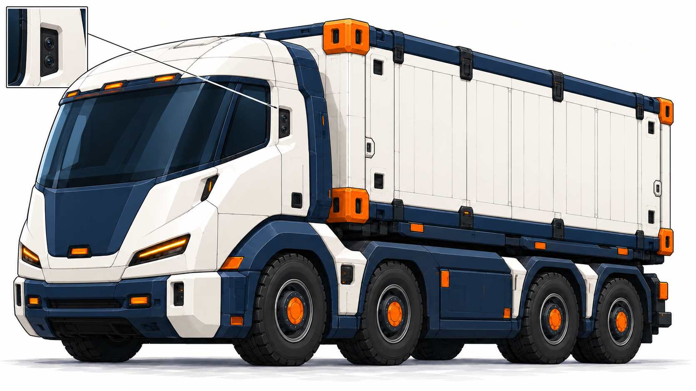
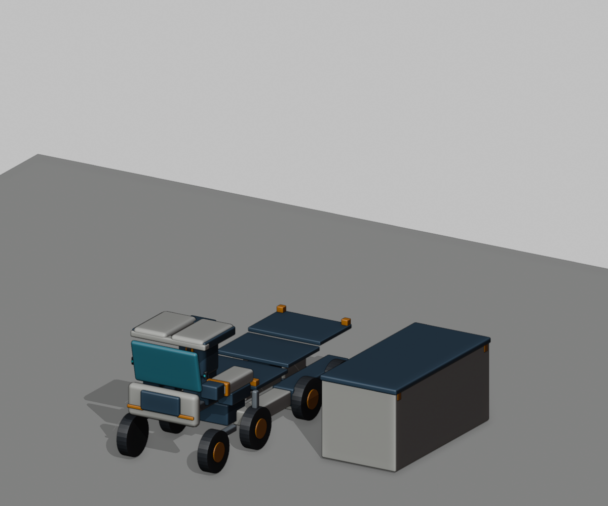
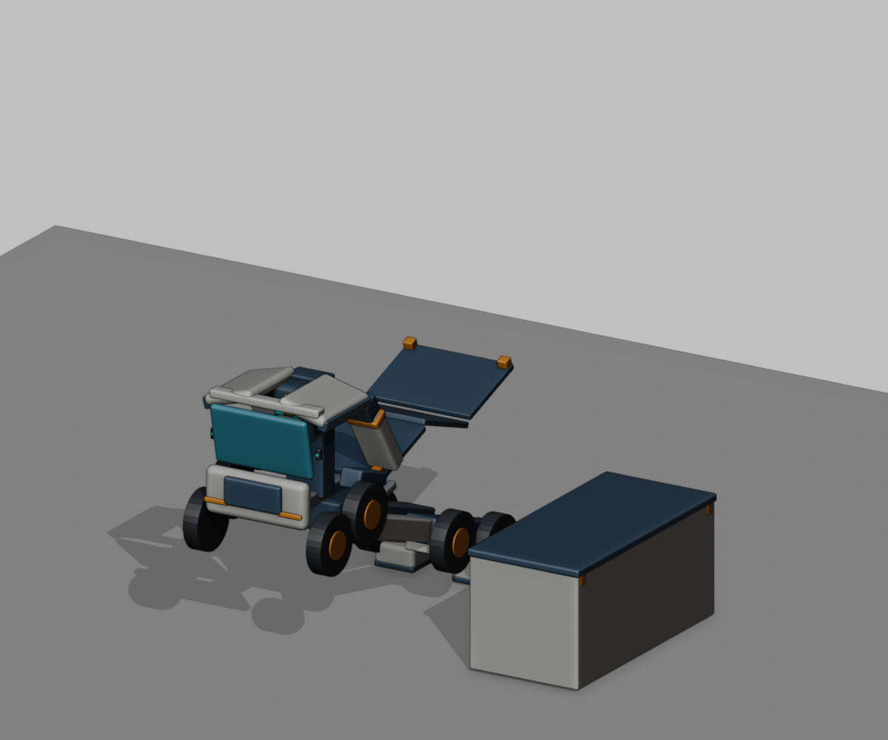
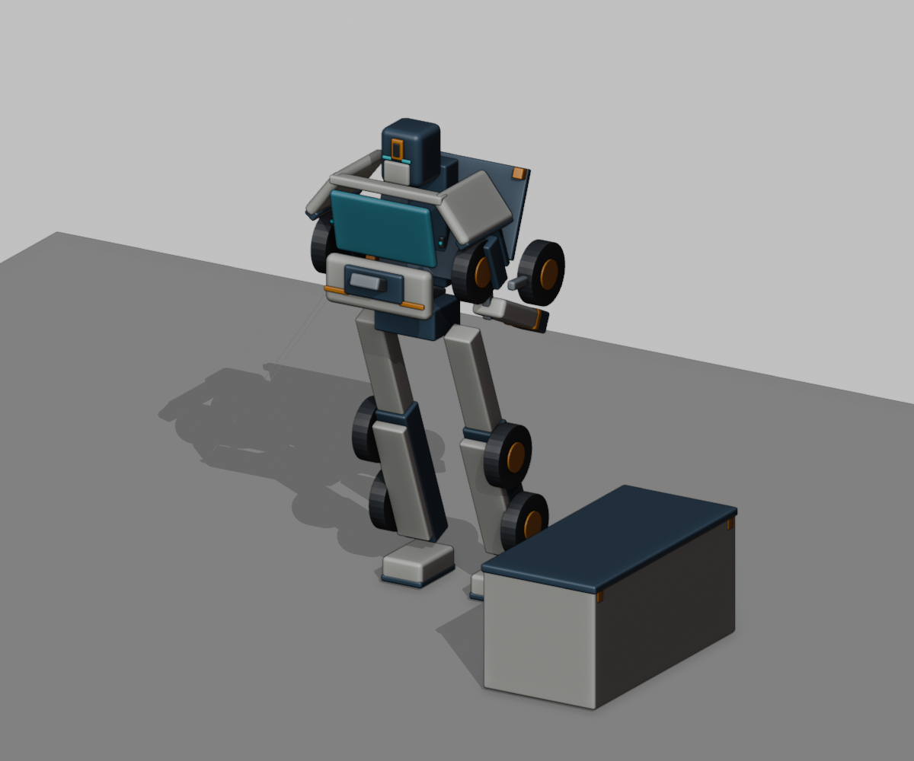
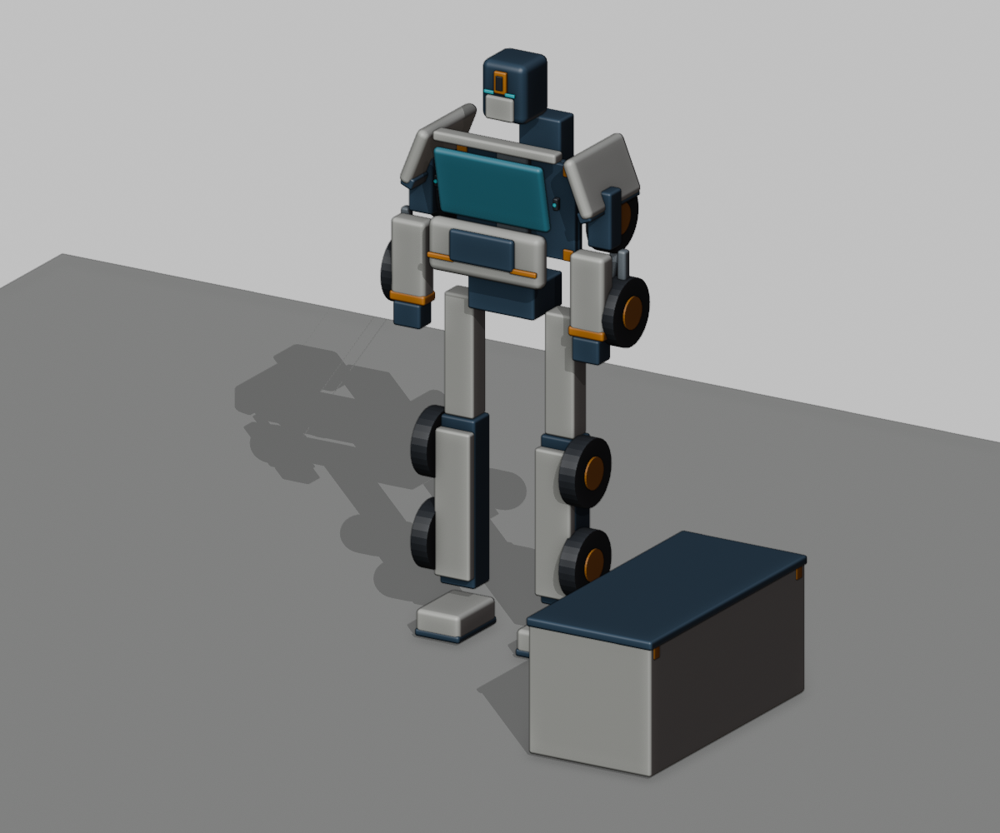

本页头部A/B已被用户否定：缺少明确天线，宽罩像眼镜蛇，神态偏邪恶。当前请看保留天线与正面角色头型修正版。本页车形与布局仍保留其原范围。
货柜领袖：额框、侧盔与护颊连成整体
按最新参考重新组织整个头盔。通讯结构融进两侧壳体，保留正常头高、藏蓝盔体、青色双眼与银色分节面甲。
两种整体盔型
A：厚实侧盔。更沉稳的额框与护颊，侧面通讯窗贴合壳体。
B：连贯额框。白色额框延伸至两侧，轮廓更流线，此前作者对此方向的倾向已被用户否定。

两案尚未合入整机。下面旧整机只展示颈下车壳和身体方向；其旧头部不代表本轮方案。
查看颈下造型与用户参考



后视改为明确的小型镜头窗口
去掉容易看成反光镜的部位，用柱侧双镜头凹窗表达摄像头后视。流线车头、四轴和单个可卸货柜保持。

同一套零件的展开草模
上一版只有外形部件对应，完整变形并未成立。本轮补了同一场景中的轮架、滑轨和铰链布局，货柜预先卸下留在地面；头部仅用通用包络，不代表上方A/B精确造型。
这是部件去向研究，尚未解决驾驶空间、全程碰撞净空、承重与展开支撑。作者已查看下面四个状态，视频导出成功不等于连续动作验收。








关键部件怎样对应
| 车形部件 | 展开去向 | 仍需处理 |
|---|---|---|
| 驾驶室/风挡 | 沿中部滑轨后移，单片风挡成为胸部，顶侧壳成为肩盖 | 内部空间、细化车壳、滑轨收纳 |
| 前两轴分离轮架 | 肩后各一轮、前臂各一轮 | 真实连接厚度、扫掠净空 |
| 后侧梁与后双轴 | 两条腿与各小腿两轮 | 展开支撑、关节承重 |
| 三片货台 | 铰链折成浅背架 | 折叠顺序和相邻壳体碰撞 |
| 驾驶室后设备仓 | 头部升降收纳 | 选定整体盔型后的真实容积 |